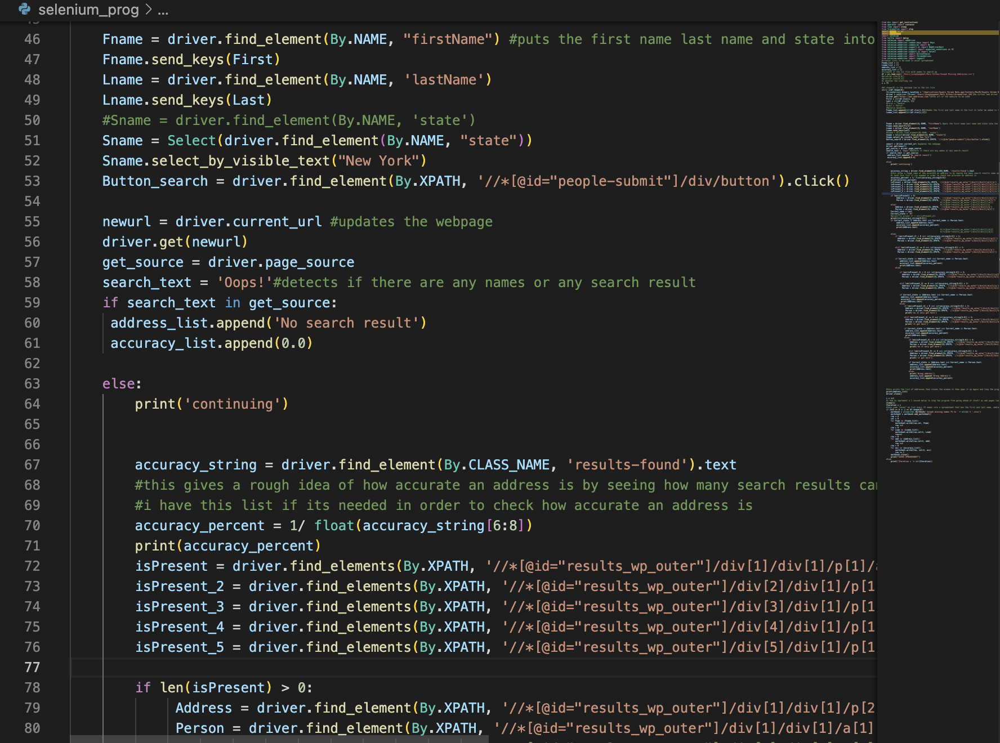
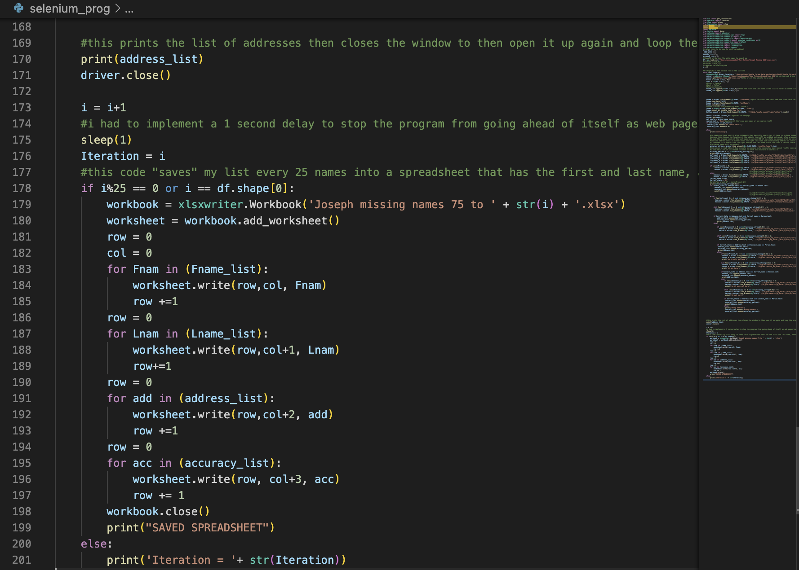

Python Web Crawler
My most enjoyable project during my Summer 2022 Internship

A image of the beginning of the code with comments
Intro
While working as an intern at Lewis Johs Avallone Aviles LLP, I was given many projects most of them involving some sort of technology. This project was my most challenging and most enjoyable. I was given this project by HR; they gave me a list of around 4000 names and asked me to use their names to find their addresses using the internet. I immediately started thinking of how I could code a solution to this problem. In the meantime, I split up the work with filing, so they started using the database to find the addresses of the clients while I started to code.
The Process
While at home I did research on Python extensions and stumbled upon one called Selenium Webdriver which made this project extremely easy. At first, I was using a very complex website and it was not working well with Selenium frequently giving me time out errors, eventually I found a website appropriately called addresses.com which had a simple UI that made it easy to input a name, select a state and search for the addresses connected to those names. The only information I had to work with was the names of the clients and the fact that they lived in New York.

A lower section of the code that creates the Excel spreadsheet
The Solution
With this I created a program that takes a .csv file of names and outputs an Excel spreadsheet with addresses associated with those names, as well as what I called an “accuracy score”, for example if we searched for John Smith from New York chances are there are hundreds of people that fit that criteria so I would acknowledge that through this score that looked at how many results appeared for each name searched. It took around 3 to 5 seconds to search for each name, but with nearly 2000 names to look for after the filing room went through the database, it would still take a long time. To try to speed this process up I only had the program look at the first 5 names if that was an option. I reasoned that if the person doesn’t come up within the first 5 results they likely weren’t in the online database (I would use the accuracy score to confirm this). The final problem to tackle was the formatting, the addresses the website gave were not in the right format, so I had to make another program to split the full address up into multiple columns. In hindsight I could have put this into the original program, but it still got the job done.
The Result
When given the original Excel file the address section was 20% complete, after working with the filing room to get names from the database by manually searching each name, they found another 30%. This left around 2000 addresses to be found, with my program I got the address section to 89.2% completed. HR was very pleased with the turnaround time and the accuracy of the spreadsheet. This project was very important as an insurance company that works with my company had a cyber-attack and the data of these clients was leaked so using the addresses, I found we were able to notify these clients of the possible security risk from the data leak. This project was a favorite because of all the new things I learned and the real-world effects this program had.